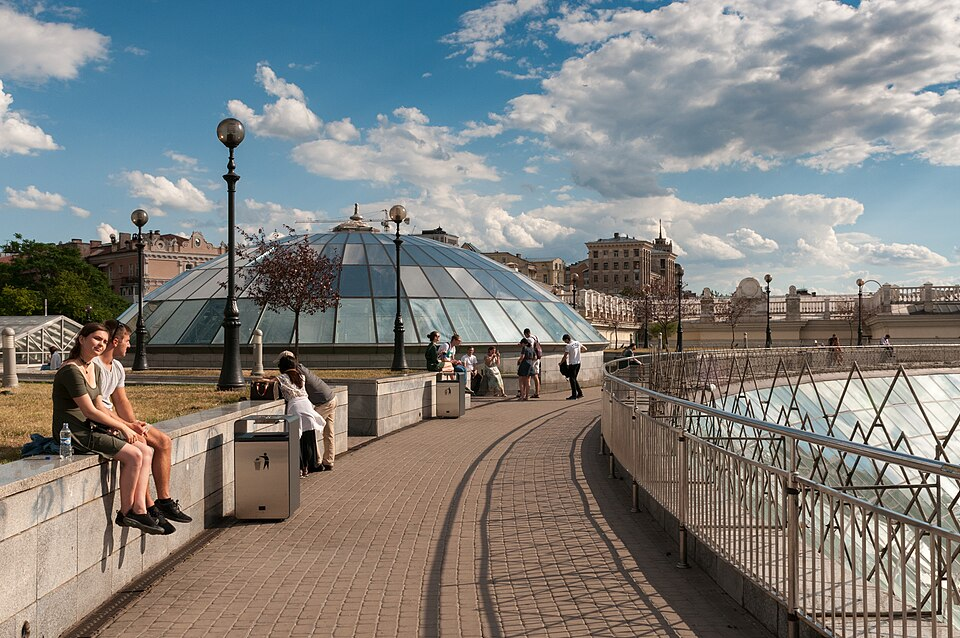

Сторінка студента
Манченко Олександр Віталійович
Демонстраційні відомості про народження: 15 травня 2006 року, Київ.
Демонстраційні відомості про освіту: київський ліцей, КПІ ім. Ігоря Сікорського. Адреса університету: Берестейський проспект, 37, Київ.
Захоплення
- Велопрогулянки
- Міська фотографія
- Настільні ігри
Улюблені фільми
- Інтерстеллар
- Прибуття
- Марсіянин
Київ запам’ятовується перепадами висот. Від майдану можна піднятися до Володимирської гірки, щоб побачити Дніпро й лівий берег.
